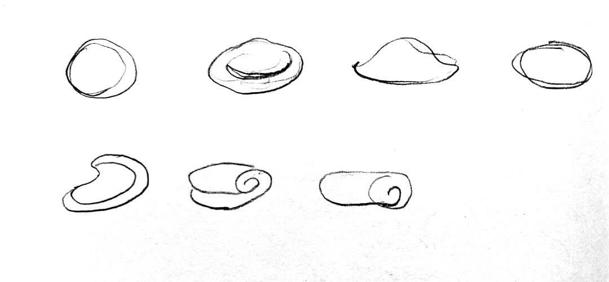

Color Blobs
The playful journey of a color changing blob. Be sure to unmute the video to hear its silly jingle!
Visual Development
For Color Blobs, I was inspired by chewing gum and clay-like textures. I wanted to adapt a traditional motion assignment of animated bouncing ball and try my hand at composing music that synchronized with extreme positions.
